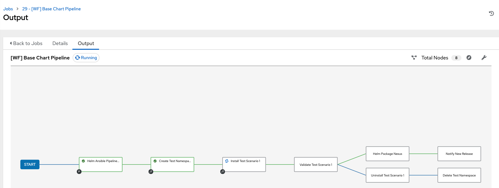

Testing Environment Visit User Configuration section to configure your username if you haven’t set it up yet! In order to execute some validations on our base-chart we need to create an ephemeral namespace in OpenShift (will be deleted after testing) and deploy (or install as it is known in Helm) a testing application. There is a scenario1 already configured in the repository base-chart/test/scenario1/values.yaml: global: nameOverride: scenario1 runtime: golang size: S image: name: openshift/hello-openshift tag: latest extraLabels: app.kubernetes.io/part-of: test-scenarios test-scenarionumber: "1" deploy: replicas: 4 strategy: RollingUpdate annotations: scenario: "scenario1" ports: - targetPort: 8080 protocol: TCP name: http port: 8081 route: enabled: false env: - name: RESPONSE value: "scenario 1 works!" For testing purposes we’re using the image openshift/hello-openshift which is an application that exposes a REST endpoint that returns either Hello OpenShift! or the value of the environment variable RESPONSE. This has nothing to do with our demo-app! Run Workflow Manually Before start working on our pipeline, let’s take a look at how to manually trigger the Workflow or pipeline in Ansible Automation Platform so we can test that everything we’re doing is working as expected: Open Ansible Automation Platform Go to: Resources > Templates > [WF] Base Chart Pipeline Click on Launch You will be automatically redirected to a view of the execution flow:  If you have not implemented the Delete Namespace task or your test failed before deleting it, remember to manually remove the namespace. Go to OpenShift > Project > select the testing namespace > Actions (top right corner) > Delete Project. Create Namespace Create the namespace where the testing scenario will be deployed and validated. Steps Solution Go to Gitea and open helm-ansible-pipeline repository. Open the playbook 00-create-namespace.yml and edit it. Add a task to create a namespace named %USER%-base-chart . Commit your changes. Use the collection kubernetes.core.k8s to create the namespace. Use the object Project with api_version project.openshift.io/v1 to create the namespace. Go to Gitea and open helm-ansible-pipeline repository. Open the playbook 00-create-namespace.yml and edit it. Modify the playbook adding a new task to create a namespace named %USER%-base-chart. The playbook would be like: --- - name: Create Base Chart namespace hosts: all gather_facts: false tasks: - name: Debug ansible.builtin.debug: msg: Create Base Chart namespace - name: Create Base Chart test namespace kubernetes.core.k8s: definition: apiVersion: project.openshift.io/v1 kind: Project metadata: name: "%USER%-base-chart" state: present Commit your changes. Install Chart Install the base-chart in the previous task created namespace. Steps Solution Go to Gitea and open helm-ansible-pipeline repository. Open the playbook 01-install-test-scenario.yml and edit it. Add a new task to clone base-chart repository (you can use /tmp/basechart as destination). Add a new task to install the scenario1. Chart is in /base-chart/chart and values are in /base-chart/test/scenario1/values.yaml. Commit your changes. Use the collection ansible.builtin.git to clone the repository. Use the collection kubernetes.core.helm to install chart. Review wait parameter to wait until chart is installed before moving forward. Go to Gitea and open helm-ansible-pipeline repository. Open the playbook 01-install-test-scenario.yml and edit it. Add a new task to clone base-chart repository. The playbook would be like: --- - name: Install Helm scenario hosts: all gather_facts: false tasks: - name: Debug ansible.builtin.debug: msg: Install Helm scenario - name: Clone Base Chart remote repository ansible.builtin.git: repo: http://gitea.app-lifecycle-lab.svc:3000/%USER%/base-chart.git dest: /tmp/base-chart version: master # TODO: Install Helm test scenario1 Add a new task to install the scenario1. Chart is in /base-chart/chart and values are in /base-chart/test/scenario1/values.yaml. The playbook would be like: --- - name: Install Helm scenario hosts: all gather_facts: false tasks: - name: Debug ansible.builtin.debug: msg: Install Helm scenario - name: Clone Base Chart remote repository ansible.builtin.git: repo: http://gitea.app-lifecycle-lab.svc:3000/%USER%/base-chart.git dest: /tmp/base-chart version: master - name: "Install Helm test scenario 1" kubernetes.core.helm: name: "scenario1" chart_ref: "/tmp/base-chart/chart" release_namespace: "%USER%-base-chart" wait: yes values_files: - "/tmp/base-chart/test/scenario1/values.yaml" register: install_output Commit your changes. Uninstall Chart After performing some validations we will need to uninstall the base-chart deployed in previous task. Steps Solution Go to Gitea and open helm-ansible-pipeline repository. Open the playbook 03-uninstall-test-scenario.yml and edit it. Add a new task to uninstall the scenario1. Commit your changes. Remember to use the already downloaded repository Use the collection kubernetes.core.helm to install chart. Go to Gitea and open helm-ansible-pipeline repository. Open the playbook 03-uninstall-test-scenario.yml and edit it. Add a new task to uninstall the scenario1. The playbook would be like: --- - name: Uninstall Helm scenario hosts: all gather_facts: false tasks: - name: Debug ansible.builtin.debug: msg: Uninstall Helm scenario - name: Uninstall Helm test scenario kubernetes.core.helm: name: "scenario1" chart_ref: "/tmp/base-chart/test/scenario1/values.yaml" release_namespace: "%USER%-base-chart" state: absent wait: yes Commit your changes. Delete Namespace After executing all validations and uninstalling the scenario, we have to delete the ephemeral namespace. Steps Solution Go to Gitea and open helm-ansible-pipeline repository. Open the playbook 04-delete-namespace.yml and edit it. Add a new task to delete the namespace named %USER%-base-chart . Commit your changes. Use the collection kubernetes.core.k8s to create the namespace. Go to Gitea and open helm-ansible-pipeline repository. Open the playbook 04-delete-namespace.yml and edit it. Add a new task to delete the namespace named %USER%-base-chart. The playbook would be like: --- - name: Delete Base Chart namespace hosts: all gather_facts: false tasks: - name: Debug ansible.builtin.debug: msg: Delete Base Chart namespace - name: Delete Base Chart test namespace kubernetes.core.k8s: definition: apiVersion: project.openshift.io/v1 kind: Project metadata: name: "%USER%-base-chart" state: absent Commit your changes.